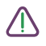

GEAGRO VID
GEAGRO VID
Software para viñedos que te indica qué hacer y cuándo
Una solución especializada en viñedos, para productores y equipos técnicos que necesitan interpretar información climática, fenológica y sanitaria para actuar a tiempo y optimizar cada etapa del cultivo.

Qué incluye
Gestión de viñedos a lo largo de toda la campaña

Gestión de viñedos y cultivos
Organización completa de la superficie productiva por unidad técnica.
Plan técnico del viñedo
Labores e insumos según las etapas del ciclo fenológico, para automatizar la planificación de órdenes de trabajo.

Alertas agronómicas
Detección de riesgos sanitarios y climáticos para actuar a tiempo.
Integración de datos climáticos
Análisis de lluvias, temperatura, humedad, vientos y condiciones críticas.

Registro de intervenciones
Historial de aplicaciones y labores realizadas en cada campaña y cultivo.

Seguimiento de órdenes de trabajo
Estado de cada orden y labores realizadas.
Estado del viñedo en tiempo real
Estado productivo y sanitario, con indicadores y análisis técnico.

Evaluación del desempeño
Rendimientos y costos del viñedo a lo largo de la campaña.
Decisiones a tiempo
Con GEAGRO VID gestionás tu viñedo para decidir mejor
- Detecta riesgos sanitariosDe forma automática, a partir de las condiciones del cuartel.
- Integra datos climáticosEn tiempo real, para anticipar condiciones críticas.
- Identifica el estado fenológicoDel cultivo en cada etapa de la campaña.
- Prioriza accionesSegún cada situación.
El sistema analiza la información y te indica qué hacer, cuándo hacerlo y con qué prioridad, para actuar a tiempo en cada campaña y lote.
Cómo funciona
Del dato técnico a la acción
GEAGRO VID transforma información compleja en decisiones simples: reducís la incertidumbre y actuás en el momento justo, mejorando la calidad y el rendimiento del viñedo.
- Registra datos climáticos

Detecta riesgo y genera alerta- Permite planificar acciones estratégicas
- Gestiona las operaciones
Te mostramos GEAGRO VID con tus propios cuarteles.
Coordinamos una demo para conocer tu viñedo y mostrarte cómo anticipar riesgos y priorizar labores.
Preguntas frecuentes
Sobre GEAGRO VID.
¿Tenés otra duda? Escribinos por WhatsApp o dejanos tus datos en el formulario de demo.
¿Qué datos climáticos usa GEAGRO VID?
Lluvias, temperatura, humedad, vientos y condiciones críticas. Con esa información detecta riesgos y genera alertas.
¿Cómo funcionan las alertas agronómicas?
El sistema cruza los datos climáticos con el estado fenológico del cultivo, detecta riesgos sanitarios y climáticos (por ejemplo, heladas) y te indica la próxima acción con su prioridad.
¿Qué es el plan técnico del viñedo?
Es la definición de labores e insumos según las etapas del ciclo fenológico. A partir de él se planifican automáticamente las órdenes de trabajo.
¿Puedo ver el historial de aplicaciones?
Sí. Queda registrado el historial de aplicaciones y labores realizadas en cada campaña y cultivo.
¿Sirve para equipos técnicos que asesoran a varios productores?
Está pensada para productores y equipos técnicos. Contanos cómo trabajan en el formulario de demo y te mostramos cómo organizarlo.
¿Cómo pido una demo?
Completá el formulario de esta página o escribinos por WhatsApp. Te contactamos para conocer tu viñedo y coordinar la presentación.
Brochure
Llevate toda la información
Módulos, funcionalidades y paneles de GEAGRO VID (y también de GEAGRO CAMPO), para compartir con tu equipo técnico.
Descargar brochureDemo
Solicitá tu demo de GEAGRO VID
Completá tus datos y te contactamos para coordinar una presentación.